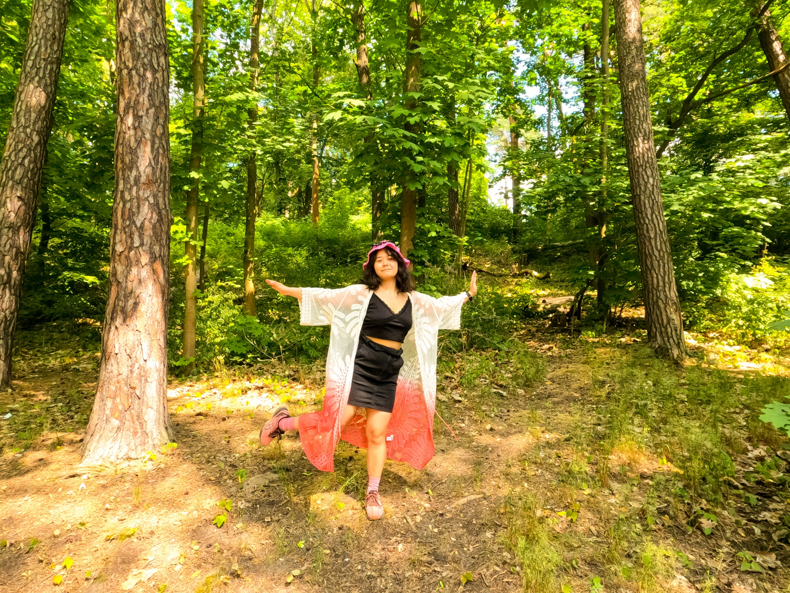
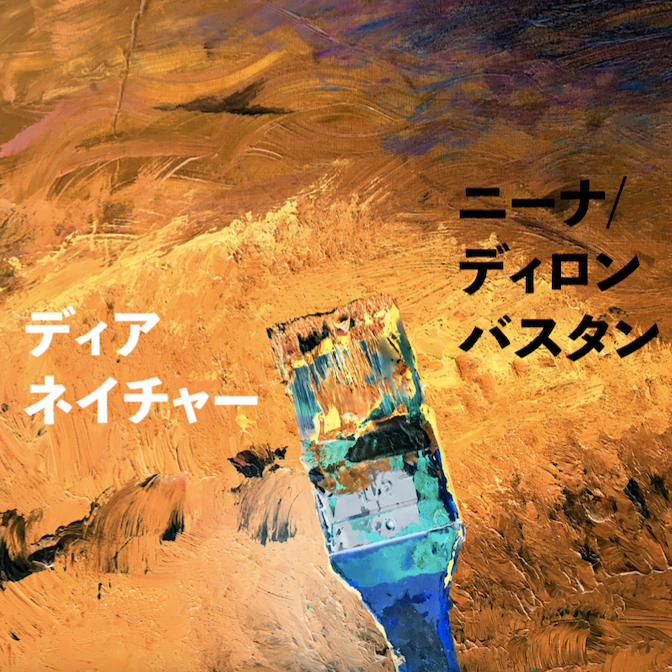

Nina Yamauchi is a singer-songwriter, keyboardist, and producer from Japan. Her music style is mainly indie pop, and she loves the acoustic style, but she is currently searching for her sound with synthesizer and DAWs. She began learning classical piano at the age of 3 in her hometown of Osaka, Japan. She continued lessons until the age of 12 when she was busy studying and playing sports at her school. After that, she took a different path and finished her law studies in university, but she found her passion for music again and started to focus on music again. She had a great influence on Western music and lifestyle and decided to travel to California and NY in 2016. She participated in many open mic concerts in NY and met brilliant musicians. This inspired her even more and she left Japan for Melbourne, Australia in 2017 to continue her music career abroad. In Melbourne, she performed a lot on the streets. Then she moved to Toronto, Canada, and joined the band Human Magic. In the band, she played the keyboard. In 2019, she moved to Berlin, Germany, and started recording her songs with her friends. Recently, she also started to produce her music by herself, and is interested in learning and programming Audio Plug-Ins.
Music
-
Dear Nature

-
My Love
-
wnbwu